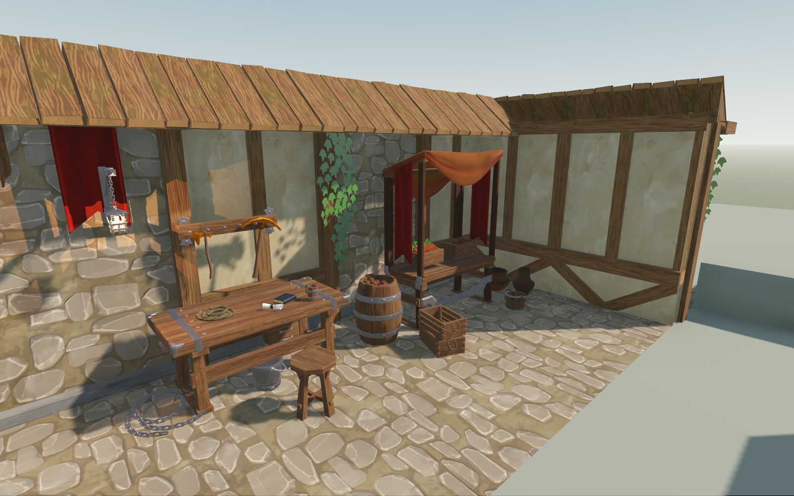
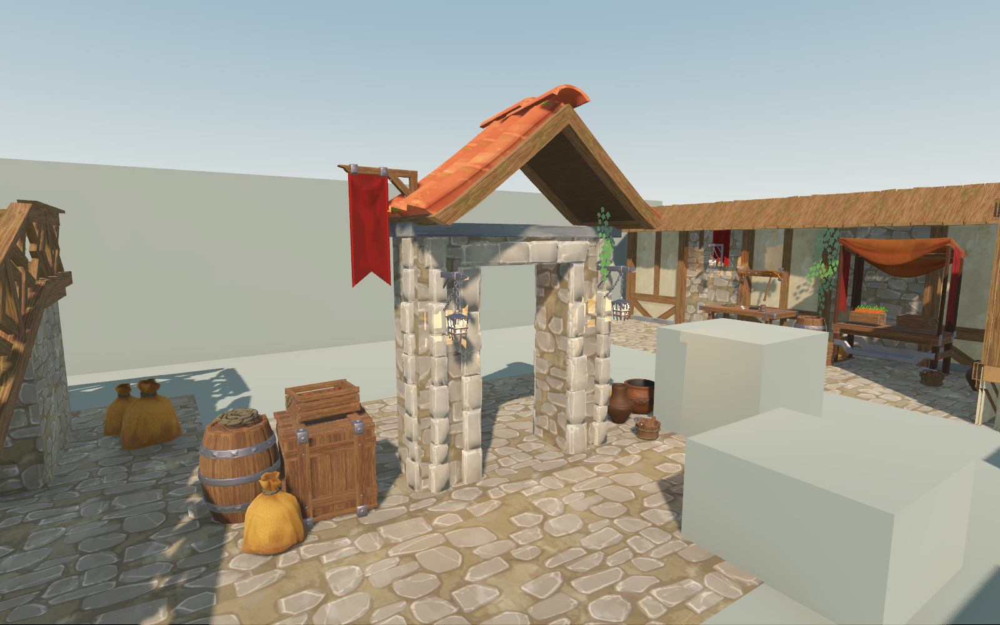
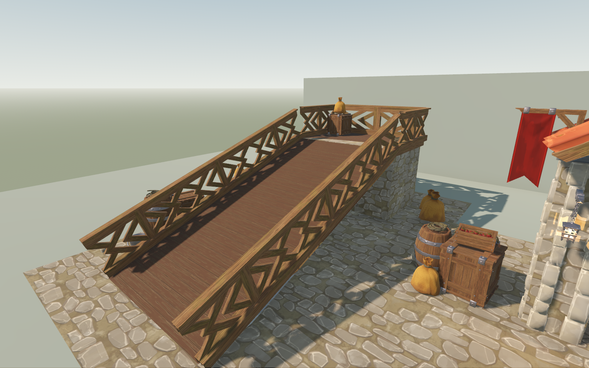
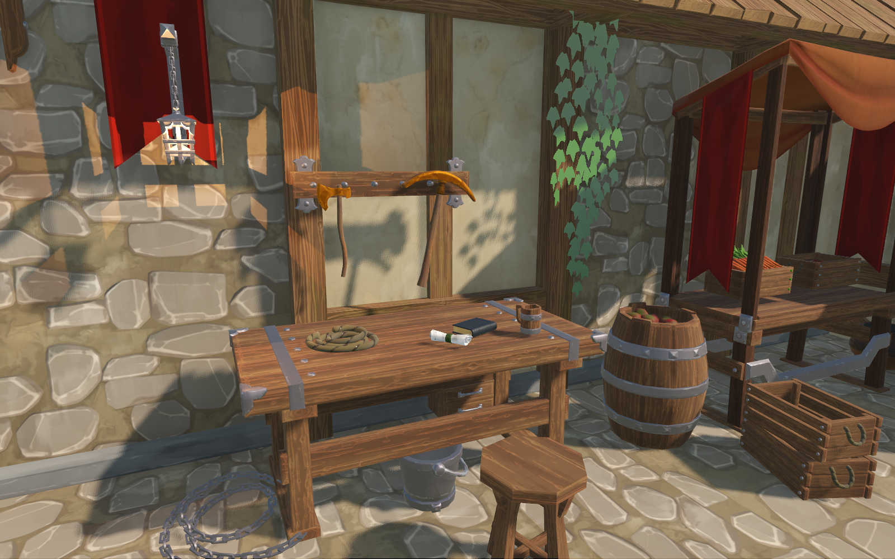
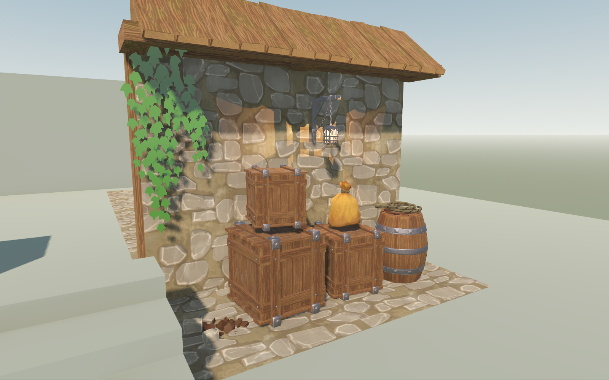
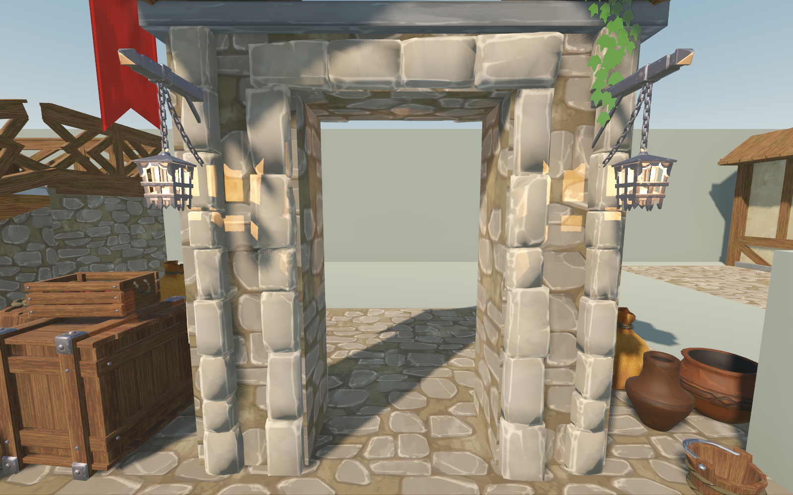
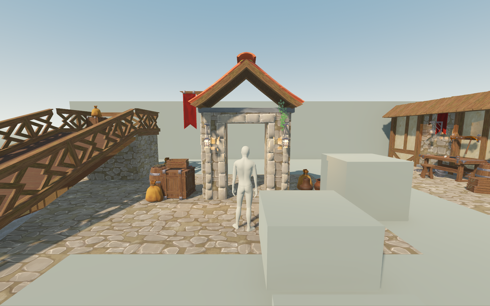
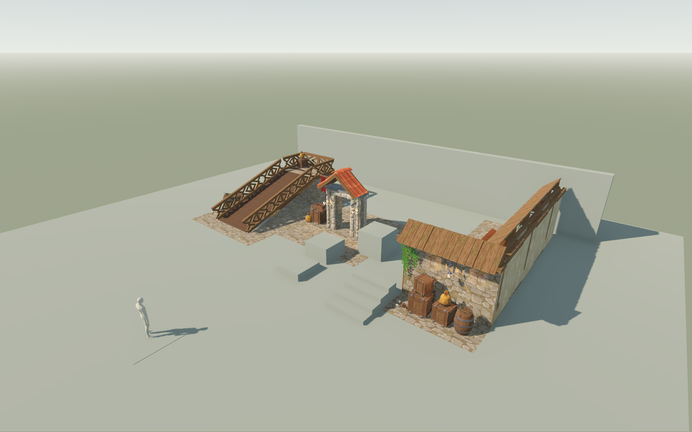
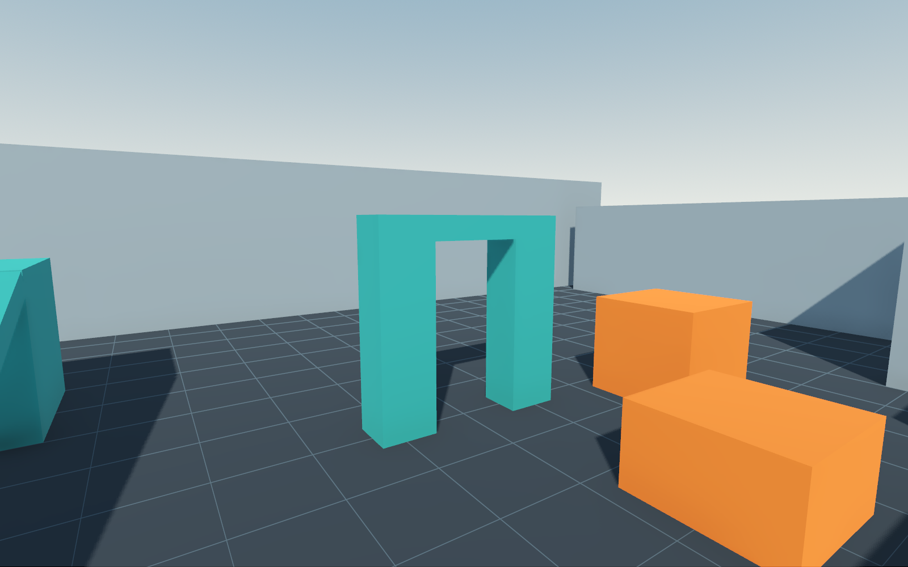

先把三个局部做完整。
同一测试场，使用真实建筑与道具素材重新装配门洞、卸货坡道和墙边作业区。以下图片全部来自 Godot Forward+ 实际运行，没有使用宣传图代替场景成果。

从 Unity 到 Godot：打开与试玩
- 用 Godot 4.7.2 打开
GodotProject/envart-pipline/project.godot，等待导入完成。 - 按 F5 运行当前主场景
envart/local_sample/local_sample.tscn。启动时展示门洞机位。 - 按 1 或 2 回到角色，点击画面捕获鼠标，用 WASD / Shift / Space 移动、奔跑、跳跃。
- 按 Esc 释放鼠标。按 5、6、7 可反复回到固定观察角度，继续移动鼠标不会跳回旧朝向。
| 输入 | 当前样板中的行为 |
|---|---|
| 5 / 6 / 7 | 门洞 / 坡道 / 墙边道具的自由观察机位 |
| 0 | 白盒与美术层对照；白盒状态关闭新增道具碰撞 |
| 1 / 2 / 3 | 第一人称 / 第三人称 / 自由观察 |
| 4 / P / Home | 原有轨迹相机 / 播放暂停 / 回到轨迹起点 |
| H / R | 隐藏局部样板提示 / 回到门洞前出生点 |
原有轨迹仍巡检整个测试场。本轮没有改成只看局部的轨迹；近景使用三个观察书签。历史三风格场景仍可打开后按 F6 单独运行，其 5 / 6 / 7 含义保持原样。
近景检查










查看范围总览与原白盒对照


在编辑器里改哪里
场景与 Prefab 的对应
Godot 的 .tscn 可以像 Unity Prefab 一样实例化。打开 local_sample.tscn：BaseLab 管玩法，Art 是素材装配，ReviewViews 是三个观察机位。
双击 art.tscn 可直接修改各组节点的位置、旋转和缩放。场景中保留 glTF 实例及素材路径元数据。
素材和碰撞分开检查
Doorway_StoneAndTimber、Ramp_LoadingDock、Wall_ServiceAndMarket 对应三个局部。大型道具的 Footprint 节点使用独立碰撞，需要和道具一起移动。
原始 17 个白盒静态碰撞体保持不变。新道具、货车和护栏的碰撞是简化代理，未做逐三角形精确碰撞。
材质保留作者的贴图与 UV。适配包含：启用 mipmaps 与各向异性过滤、校正部分道具的顶点色、减弱法线强度、调整木色和灯光。门柱等需要与白盒严密对齐的位置仍保留原始填充面，使用作者石材纹理；主要可见门框、屋檐、栏杆和 props 使用下载的真实网格。
运行时的白盒对照与局部填充材质由 sample.gd 切换。新增美术层可以独立移动或替换，控制器不依赖这两套素材。
重新生成与验证命令（会覆盖已生成的样板场景）
日常摆放直接在编辑器中修改即可。以下命令只用于重建初始样板；手动修改前先另存场景或提交 Git。
GODOT_BIN=/Applications/Godot.app/Contents/MacOS/Godot
"$GODOT_BIN" --headless --path GodotProject/envart-pipline \
--script res://envart/tools/build_local_sample.gd
"$GODOT_BIN" --headless --path GodotProject/envart-pipline \
--script res://envart/tools/build_local_sample_scene.gd
"$GODOT_BIN" --path GodotProject/envart-pipline \
--script res://tests/local_sample_visual.gd截图输出：/tmp/envart-local-sample/。测试覆盖原白盒碰撞保持、门洞双向穿行、坡道登顶、四种相机与书签后的鼠标朝向连续性。技术验证通过不等于美术验收通过。
实际使用的免费素材
| 作者 / 素材 | 使用范围 | 授权记录 |
|---|---|---|
| Quaternius · Medieval Village MegaKit 作者公开下载页 | Standard 免费包；精选 30 个建筑、铺面、栏杆、藤蔓和货车模型导入。 | 包内 License_Standard.txt：CC0 1.0 |
| Quaternius · Fantasy Props MegaKit 作者公开下载页 | Standard 免费包；精选 40 个工具、容器、家具、食品与杂物模型导入。 | 包内 License_Standard.txt：CC0 1.0 |
本场景实际实例化其中 48 种模型。未购买或使用 Pro / Source 专属示例场景、磨损版本或自定义着色器。两个素材目录包含原始许可、下载页面和文件 SHA-256 清单；源 ZIP 不放进仓库。
Mixamo 人形角色仍沿用本机安装。它与以上 CC0 环境素材采用不同的分发规则，原始角色文件没有加入 Git。详细说明见 README 与上一版角色教程。